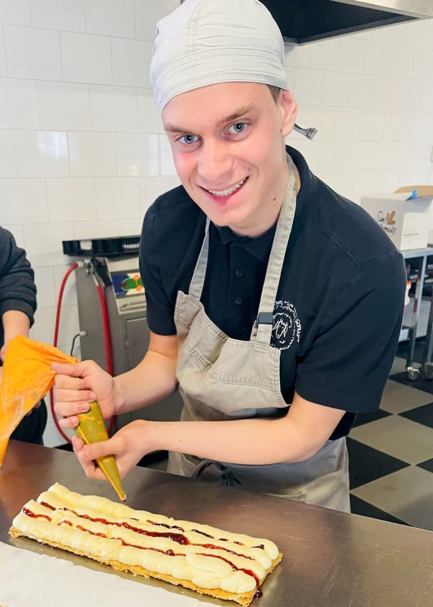
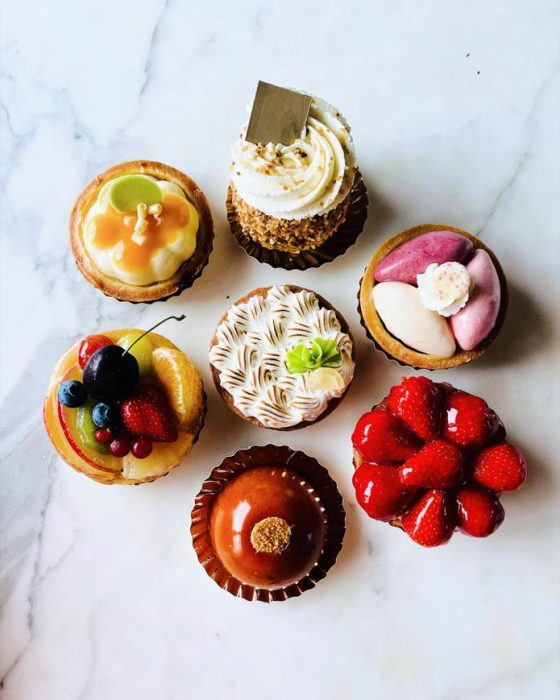
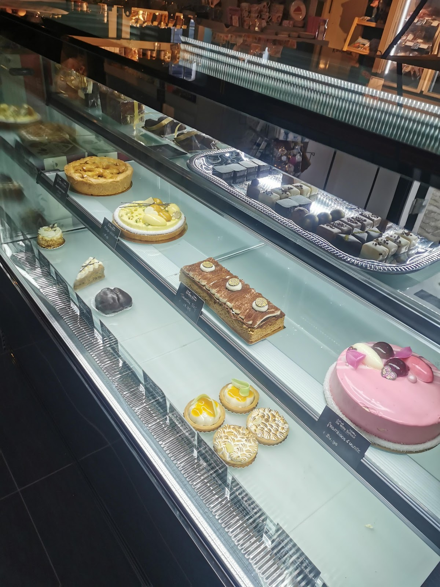
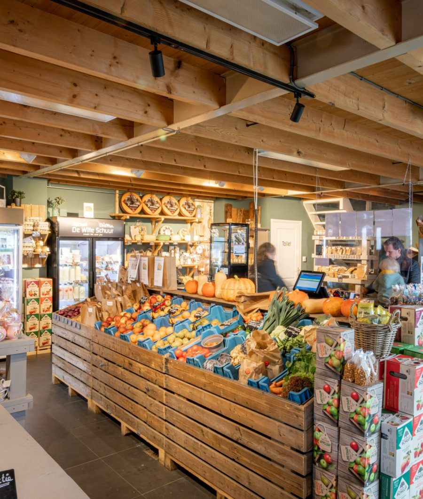
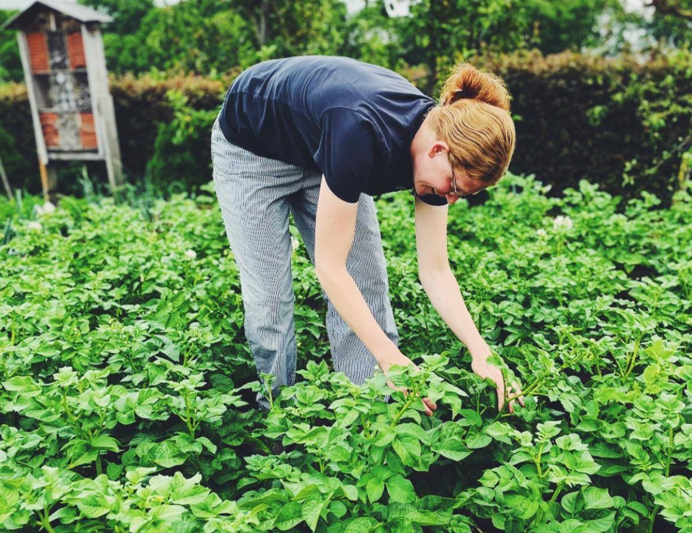
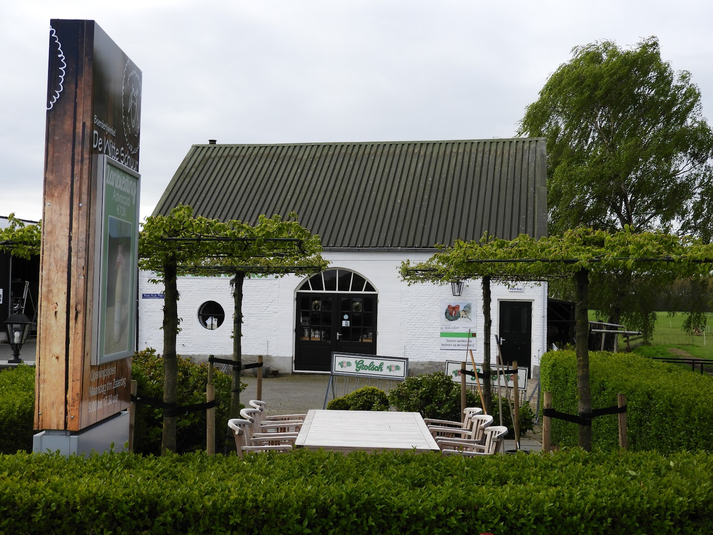
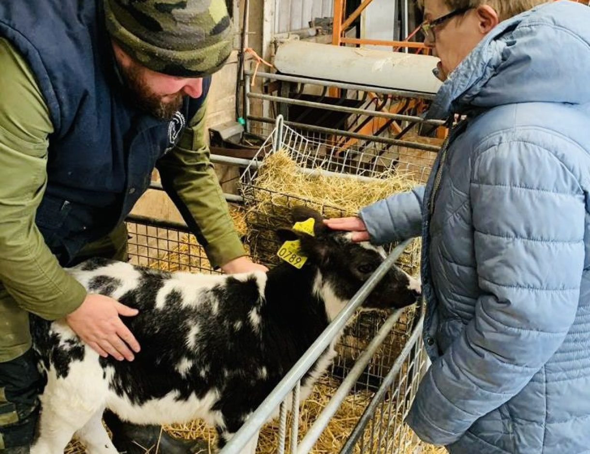
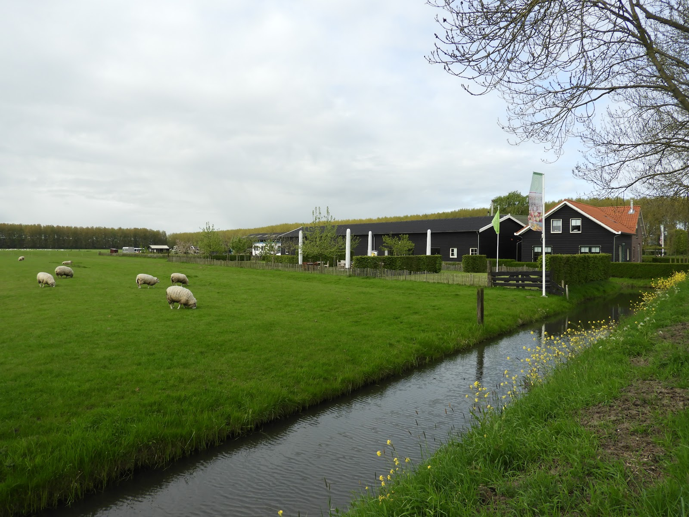
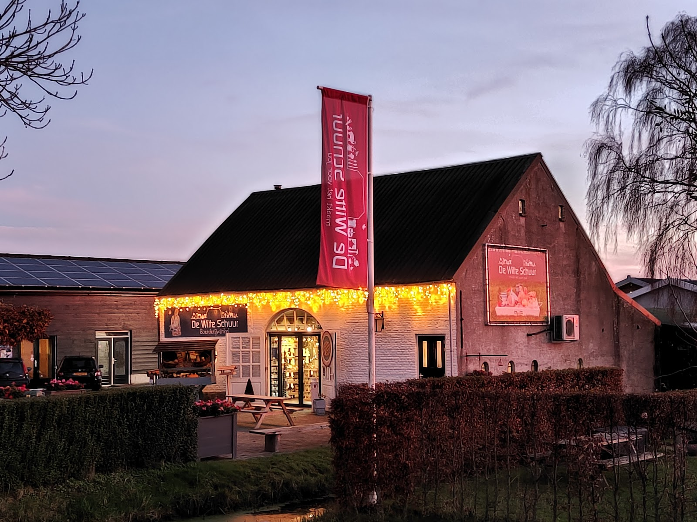

Zorgboerderij met bakkerij en boerderijwinkel in Culemborg
Bijzondere bakkers.
Bijzonder gebak.
Op onze boerderij bakken deelnemers en patissiers samen taarten, gebak en koekjes. Haal ze vers in de boerderijwinkel, met groente uit eigen moestuin.
4,6 uit 246 Google-reviews

Vers gespoten in onze eigen bakkerij
Uit onze patisserie
Onze bijzondere bakkers maken samen met de patissiers eerlijke lekkernijen: taarten, gebakjes, koekjes, crackers en kaasstengels. Alles wordt hier op de boerderij gemaakt, en dat proef je.
Een taart voor een verjaardag of een doos gebak voor op het werk? Bel ons, dan zetten we hem voor je klaar.
- Chipolata gebakje € 3,35
- Bavaroistaart € 21,79
- Gesorteerd luxe gebak, 10 stuks € 30,00


Di t/m za vanaf 9:00 vers in de vitrine.
Maandag vanaf 13:00

Vers uit de boerderijwinkel
In onze winkel vind je alles wat we zelf maken en kweken. Daarnaast verkopen we mooie streekproducten. De deelnemers helpen je graag: ze pakken je boodschappen in, vullen de schappen en houden de winkel schoon.
Van eigen erf
Aardappels, groenten, eieren, fruit, cakes, taarten, snacks en lamsvlees.
Uit de streek
Meel van de molen, jams, sappen, zuivel, kaas en noten.
Uit eigen moestuin, zonder kunstmest
We kweken op een verantwoorde manier, zonder kunstmest en bestrijdingsmiddelen. De deelnemers zaaien, kweken en verzorgen alle groenten en fruit, en ieder jaar bedenken we samen wat er de grond in gaat.

Een ijsje op het terras, de kinderen bij de dieren
In het hoogseizoen zijn de Theetuin en de IJssalon open. Neem een gebakje en wat te drinken onder de leibomen, terwijl de kinderen spelen en de dieren bekijken.

"Lekker buiten zitten op terras waar kinderen lekker kunnen spelen. Lekker gebakje met wat te drinken op het terras of een lekker ijsje. Echt een aanrader."
"Vriendelijk personeel! Fijne plek om te genieten van een ijsje terwijl je kids lekker kunnen spelen en de dieren kunnen bekijken."
"Vriendelijke medewerkers (M/V) en een heerlijk zonnetje achter, beschut tegen de wind. Super vers eten en ook heel snel opgediend."
Samen werken en beleven op de boerderij
De Witte Schuur is een agrarisch familiebedrijf in het buitengebied van Culemborg. Sinds 2008 hebben zo'n 70 (jong)volwassenen met een beperking hier een zinvolle dagbesteding, in een veilige en vertrouwde omgeving. Op de boerderij, in de bakkerij, de winkel, de moestuin en de houtwerkplaats doet iedereen mee op zijn of haar eigen manier.
Wij zijn Frans en Sanne van Herwijnen. Voor Frans is De Witte Schuur al van kinds af aan een vertrouwde plek, bij zijn grootouders op de boerderij. Sinds 2024 wonen we hier met onze kinderen, en in 2025 namen we het stokje over van Conny en Frans sr. We willen een plek blijven waar mensen zichzelf mogen zijn, waar iedereen mee kan doen en waar ruimte is om te leren, te groeien en vooral veel plezier te hebben.
Frans en Sanne van Herwijnen

"Een schitterende zorgboerderij. Enorm fijne sfeer op de locatie. Jet eigenaarsechtpaar heeft een enorme passie om alles in het werk te stellen om het voor alle deelnemers een veilige plek te zijn. De deelnemers zijn hier echt op hun plek"

Voor bedrijven: lunch, gebak en kerstpakketten
Een verzorgde lunch, overheerlijk gebak of een high tea voor je team of je klanten? Wij staan voor je klaar.
Of mail direct naar winkel@de-witteschuur.nl
Kerstpakketten, gemaakt in Culemborg
Kleine of grote pakketten voor personeel en relaties, helemaal naar wens samen te stellen. Alle deelnemers dragen eraan bij, en dat maakt elk pakket bijzonder.
Uit de bakkerij
Koekjes, crackers, kerstbroden, kaasstengels, gingerbread mannetjes en kerstkransjes.
Uit de houtwerkplaats
Houten borrelplanken en kratjes, gemaakt in de houtwerkplaats en het atelier.
Netjes ingepakt
Ons inpakteam pakt alles enthousiast in, ook brievenbuspakketten of een cadeau dat verstuurd moet worden voor de verjaardag van een medewerker.
Kom langs aan de Prijsseweg
Prijsseweg 164105 LE Culemborg Plan je route
Openingstijden boerderijwinkel
| Maandag | 13:00 – 17:30 |
| Dinsdag | 09:00 – 17:30 |
| Woensdag | 09:00 – 17:30 |
| Donderdag | 09:00 – 17:30 |
| Vrijdag | 09:00 – 17:30 |
| Zaterdag | 09:00 – 17:30 |
| Zondag | Gesloten |

Zin om ons team te versterken in de winkel of de patisserie? Stuur je sollicitatie naar Sanne van Herwijnen via info@de-witteschuur.nl.